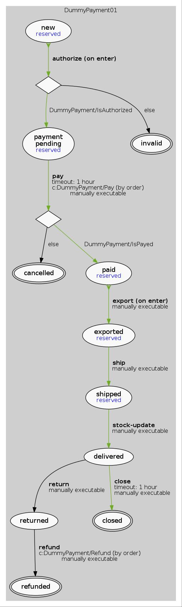

Availability
For most of the e-commerce platforms stock updates is nothing reflective. Stock updates most of the time will come from partner merchants and the frequency of those can be very different from case to case. If stock is what defines for an e-commerce platform whether the product is available for sale or not, this can obviously create overselling or underselling. To avoid this type of situations we make sure that product availability does not rely only on stock. Availability takes under consideration also current open orders.
In general product availability defines if the product can or cannot be sold on the platform.
Availability check
- Product detail page won’t show the Add to cart button when concrete product is out of stock.
Instead informational message is displayed. - Pre-check plugin in cart.
\Spryker\Zed\AvailabilityCartConnector\Communication\Plugin\CheckAvailabilityPlugin
checks if all items in cart are available. It’s executed after add to cart operation.
If an item is not available, an error message is sent to Yves. - Checkout pre-condition when order is placed in last step. Spryker\Zed\Availability\Communication\Plugin\ProductsAvailableCheckoutPre
ConditionPlugin checks all items in cart if any of them is not available anymore order
placing is aborted and error message is displayed.
Reserved flag
When order is placed, payment state machine is executed and item is moved through states. Some states have a “reserved” flag which means that the state influences the item availability.
When items are moved to state with reserved flag, ReservationHandlerPluginInterface::handle() is triggered. This call means that the product availability has to be updated. State machine is also tracking products in reserved state, database table spy_oms_product_reservation is used for this.
Below you can see dummy payment state machine, which is a sample implementation with reserved flags:

Availability collector
The availability collector collects all availability information from abstract product to concrete. Items are grouped by abstract product.
The collector is touched:
Case1: if there is no record exist in availability table and availability is created, it needs to be touched.
Case2: if availability amount was 0 and now it’s more than 0, it needs to be touched.
Case3: if availability amount was more than 0 and now it’s 0, it needs to be touched. C
ollected data example in JSON.
{
"abstractProductAvailability": true,
"concreteProductAvailabilityItems": {
"27003893-1": true,
"27003893-2": true
}
}
This information is used in product detail page when add to cart button is rendered.
Availability calculation
Product availability can have flag is_never_out_of_stock. This indicates that the product is always available for sale and does not have a finite stock. In this situation the availability calculation is not needed anymore.
Availability = max(0, sum of all stock types(Stock) - Reserved Items)
In state machine items get reserved for an open order. There are certain states that release item, for example when payment fails and order is canceled. But if order is successfully fulfilled and item is delivered, item stays reserved till next stock update.
Stock update triggers the event stock update. For example in our dummy payment’s implementation this will move the items from “Shipped” state to next state. As the consecutive state is not reserved, the items that were already shipped will not be reserved any more.
Import / change stock
It’s possible to use vendor/bin/console updater:product-stock command to import stocks into database. The default stock importer uses csv file from src/Pyz/Zed/Updater/Business/Internal/data/stocks.csv which imports stocks for demoshop. Zed UI is provided to allow assigning stocks to products. This can be accessed (zed.domain.tld)/availability. Stock update considers the stock from the stock file to be the absolute value. On stock update the stock is overwritten with the values from the file. If a certain product does not have a record in the stock file, then it is considered that the stock of this product does not have to be updated.